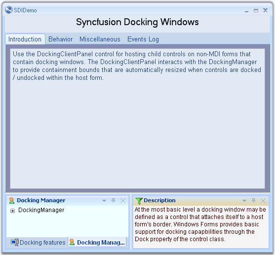

A premise of any docking windows implementation is the existence of a client window the bounds of which vary at run-time as windows get docked or undocked. This paradigm is extremely well suited for MDI type forms where the MDIClient window gets resized / relocated in synchronization with changes in the docking windows layout.
Child controls located within the MDIClient window are thus always assured of a static spatial relationship with the parent container.
Non-MDI forms, however, do not have any such client window and all non-dockable statically positioned controls risk being clipped by windows that are docked in their proximity.
The Essential Tools DockingClientPanel control helps overcome this limitation by providing an auto-resized client surface on which a form's non-dockable controls may be located.
Note: The DockingClientPanel control is intended only for use with forms that do not have the MDIContainer style set.
Using the DockingClientPanel Control
The following sequence lists the steps involved in setting up a docking layout on a non-MDIContainer form using the DockingClientPanel. The DockingClientPanel is used here because in addition to the docking windows, the host form also contains several non-dockable controls that require a container with static relative bounds for implementing positioning and layout management.
1. Add the DockingManager to the form and apply the EnableDocking on dockingManager1 property for those controls that need to be set as docking windows.
2. Select the DockingClientPanel control from the designer tool box and drop it onto the form hosting the DockingManager. Size the control so that its bounds are sufficient to accommodate any non-dockable child controls that may already be present on the form.
3. If any non-dockable controls are present on the form, then drag-and-drop these controls onto the DockingClientPanel instance.
4. Set the DockingClientPanel.SizeToFit property to be true. Turning on the SizeToFit property will force the DockingClientPanel to start interacting with the Essential Tools docking architecture and the control will automatically be resized / repositioned to occupy the form's client bounds, left unoccupied by the docking windows.
5. Set the BorderStyle property to get the 3D or fixed single effect to the dockingclientpanel control.
6. The DockingClientPanel will now function as a proxy for the form's client surface and all controls originally intended to be placed on the form should henceforth be located on the DockingClientPanel; any anchoring / layout features for the child controls should be set relative to the DockingClientPanel.
7. To add controls directly to the form, the SizeToFit property can temporarily be turned off within the designer and the form resized to expose its surface. At run-time, the SizeToFit property is always enabled.
|
DockingClientPanel Property |
Description |
|
SizeToFit |
Gets or sets a value indicating whether the control is sized to fill the form's area. |
|
BorderStyle |
Indicates the border Style of the Control. |
8. DockingClientPanel control can be added to the Non-MDI forms using the below code snippet for example.
|
[C#]
//Declaration and initialization private Syncfusion.Windows.Forms.Tools.DockingClientPanel dockingClientPanel1; this.dockingClientPanel1 = new Syncfusion.Windows.Forms.Tools.DockingClientPanel(); this.dockingClientPanel1.SuspendLayout();
//Add a control to dockingclientpanel this.dockingClientPanel1.Controls.Add(this.tabControlAdv1);
//set the properties this.dockingClientPanel1.Location = new System.Drawing.Point(0, 133); this.dockingClientPanel1.Name = "dockingClientPanel1"; this.dockingClientPanel1.Size = new System.Drawing.Size(600, 369); this.dockingClientPanel1.SizeToFit = true; this.dockingClientPanel1.TabIndex = 0; this.dockingClientPanel1.Paint += new System.Windows.Forms.PaintEventHandler(this.dockingClientPanel1_Paint); this.DockingClientPanel1.BorderStyle = System.Windows.Forms.BorderStyle.Fixed3D
//Add the control to the form this.Controls.Add(this.dockingClientPanel1); this.dockingClientPanel1.ResumeLayout(false); |
|
[VB.NET]
' Declaration and initialization Private dockingClientPanel1 As Syncfusion.Windows.Forms.Tools.DockingClientPanel Me.dockingClientPanel1 = New Syncfusion.Windows.Forms.Tools.DockingClientPanel() Me.dockingClientPanel1.SuspendLayout()
' Add a control to dockingclientpanel Me.dockingClientPanel1.Controls.AddRange(New System.Windows.Forms.Control() {Me.tabControlAdv1})
'set the properties Me.dockingClientPanel1.AutoScroll = True Me.dockingClientPanel1.Location = New System.Drawing.Point(106, 0) Me.dockingClientPanel1.Name = "dockingClientPanel1" Me.dockingClientPanel1.Size = New System.Drawing.Size(452, 417) Me.dockingClientPanel1.SizeToFit = True Me.DockingClientPanel1.BorderStyle = System.Windows.Forms.BorderStyle.Fixed3D
' Add the control to the form Me.Controls.AddRange(New System.Windows.Forms.Control() {Me.dockingClientPanel1}) Me.dockingClientPanel1.ResumeLayout(False) |

Figure 92: DockingClientPanel with a non-docked TabControlAdv Control
A sample which discusses DockingClientPanel is available in the below sample installation path.
..My Documents\Syncfusion\EssentialStudio\Version Number\Windows\Tools.Windows\Samples\2.0\Docking Package\SDIDemo
The DockingClientPanel can be given an attractive look and feel using the appearance and size properties. These properties are discussed in detail below. This section also gives an idea about the scrolling feature available for the DockingClientPanel.
Background and Foreground Settings
The background and foreground of the DockingClientPanel control can be customized using the below properties.
Background color of the control can be set using the BackColor property. Background image for the control can be specified using BackgroundImage property and image layout is set through BackgroundImageLayout property. Below are the code snippets to set these properties programmatically.
|
DockingClientPanel Property |
Description |
|
BackColor |
Indicates the background color of the component. |
|
BackgroundImage |
Indicates the background image used for the control. |
|
BackgroundImageLayout |
Indicates the background image layout used for the control. |
|
[C#]
this.dockingClientPanel1.BackColor = System.Drawing.Color.AliceBlue; this.dockingClie{_ |
|
[VB.NET]
Me.dockingClientPanel1.BackColor = System.Drawing.Color.AliceBlue Me.dockingClientPanel1.BackgroundImage = CType((Resources.GetObject("dockingClientPanel1.BackgroundImage")), System.Drawing.Image) Me.dockingClientPanel1.BackgroundImageLayout = System.Windows.Forms.ImageLayout.Stretch |
The font used to display the text in the control is set through Font property and the forecolor through ForeColor property. Below are the code snippets to set these two properties programmatically.
|
DockingClientPanel Property |
Description |
|
Font |
The font used to display text in the control. |
|
ForeColor |
The foreground color of this component, which is used to display the text. |
|
[C#]
this.dockingClientPanel1.Font = new System.Drawing.Font("Arial", 9F, System.Drawing.FontStyle.Bold, System.Drawing.GraphicsUnit.Point, ((byte)(0))); this.dockingClientPanel1.ForeColor = System.Drawing.Color.RoyalBlue; |
|
[VB.NET]
Me.dockingClientPanel1.Font = New System.Drawing.Font("Arial", 9.0F, System.Drawing.FontStyle.Bold, System.Drawing.GraphicsUnit.Point, CType((0), Byte)) Me.dockingClientPanel1.ForeColor = System.Drawing.Color.RoyalBlue |
Below image illustrates a DockingClientPanel with the foreground and background properties set.
Figure 93: Foreground and Background properties set for the DockingClientPanel
Scroll properties
When the control contents are larger than its visible area, the scroll bars will automatically appear, by enabling AutoScroll property. The margin for the control during autoscroll is specified using AutoScrollMargin property and the minimum size for auto scroll area can be specified using the AutoScrollMinSize property.
|
DockingClientPanel Property |
Description |
|
AutoScroll |
Indicates whether scroll bars automatically appear when the control contents are larger than its visible area. |
|
AutoScrollMargin |
Indicates the margin around controls during auto scroll. |
|
AutoScrollMinSize |
Indicates the minimum logical size for auto scroll region. |
|
[C#]
this.dockingClientPanel1.AutoScroll = true; this.dockingClientPanel1.AutoScrollMargin = new System.Drawing.Size(1, 1); this.dockingClientPanel1.AutoScrollMinSize = new System.Drawing.Size(1, 1); |
|
[VB.NET]
Me.dockingClientPanel1.AutoScroll = True Me.dockingClientPanel1.AutoScrollMargin = New System.Drawing.Size(1, 1) Me.dockingClientPanel1.AutoScrollMinSize = New System.Drawing.Size(1, 1) |
Figure 94: Scroll properties set for the DockingClientPanel
Sizing Properties
AutoSize property when set, will allow the control to automatically size itself to fit its contents. The resize mode can be specified using AutoSizeMode property.
|
DockingClientPanel Property |
Description |
|
AutoSize |
Specifies whether a control will automatically size itself to fit its contents. |
|
AutoSizeMode |
Specifies the mode by which the user interface element automatically resizes itself. |
|
[C#]
this.dockingClientPanel1.AutoSize = true; this.dockingClientPanel1.AutoSizeMode = System.Windows.Forms.AutoSizeMode.GrowAndShrink; |
|
[VB.NET]
Me.dockingClientPanel1.AutoSize = True Me.dockingClientPanel1.AutoSizeMode = System.Windows.Forms.AutoSizeMode.GrowAndShrink |